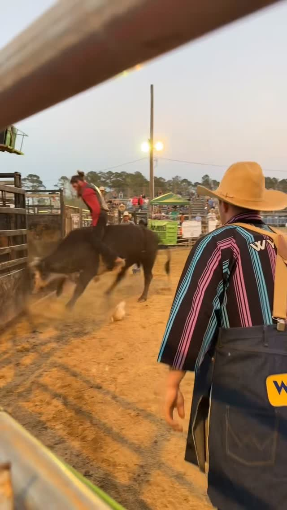
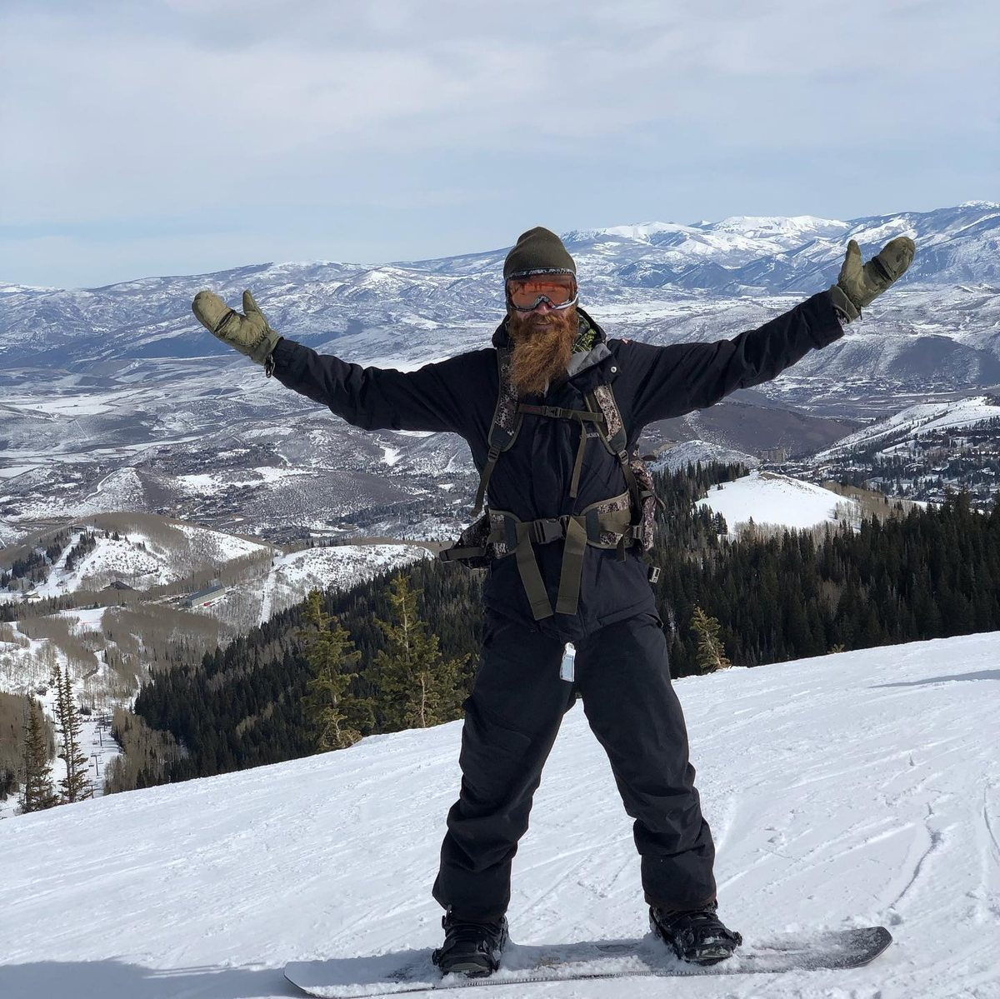

Owner & operator
This is Jon.
Veteran. Family man. The operator who shows up to run every job himself.

Jon and his wife — Canton, NC.
The man behind the machine
Discipline. Nerve.
Terrain sense.
Jon Sprouse learned discipline before he learned a trade. Military service teaches you to show up on time, finish what you start, and take care of the people next to you. Those lessons came home with him, and they run through everything Viking Grading Solutions does.
Before the machines, there was the arena. Jon spent years bull riding — ten seconds at a time, no do-overs, no easing into it. You either commit or you get hurt. That kind of commitment isn't something you can fake. You build it one ride at a time, and it stays with you long after you hang up the rope.
Somewhere between the service and the arena, Jon found the mountains. Snowboarding out here isn't a flat run — it's reading terrain, respecting where the ground drops away, knowing which line holds and which one slides. Every job site has a line through it too: where the water wants to go, where the rock sits, where the ground will carry weight. Jon reads land the way he reads a mountain — carefully, with respect for what it can do if you get it wrong.
He's a husband and a father first. After more than ten years in the excavating and construction industry, this isn't a company built to get rich quick — it's one built to put his name on work he's proud of, lot after lot. When you hire Viking Grading, you're not hiring a crew. You're hiring the guy on the machine.
Built different
Three things shaped how
Jon runs a job site.
None of them happened in a classroom.
The Service
Military discipline: show up, do the work, take care of your people. It's why every Viking Grading job starts on time and ends with the site squared away before anyone drives off.

The Arena
Bull riding taught Jon what commitment costs. Ten seconds, no half-measures, no backing out partway through. That same all-in mentality shows up the moment the bucket hits the ground.

The Mountain
Snowboarding steep terrain means reading the ground before you commit to a line. Jon reads a job site the same way — where it drops, where it holds — before anything gets cut.
Ten seconds
See it in motion.
The same all-in commitment that carried Jon through ten seconds on a bull is what shows up when the machine hits your ground.
What we stand on
Four things. Non-negotiable.
Honesty
You get the real answer, not the easy one.
Discipline
We show up, and we finish.
Craft
Grade it right the first time.
Family
We build like our name is on it. Because it is.
Ready to put the machine to work?
Get a straight answer about your property from the man who'll actually be running the machine.